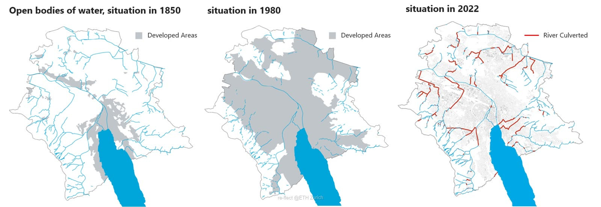

In contrast, Zurich's urban rivers face a different set of challenges. Despite being a pioneer in river daylighting — restoring culverted rivers to open channels — one third of Zurich's waterways remain underground. These culverts disrupt natural hydrological and ecological processes, fragment habitats, and limit biodiversity. While past efforts have successfully revived some urban streams, the remaining buried sections continue to hinder riverine connectivity and ecosystem function.
